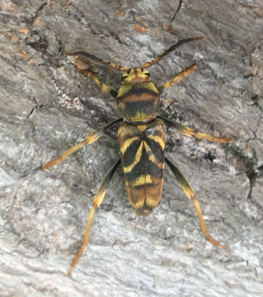
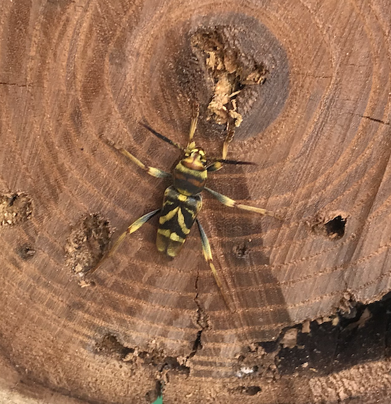

Projet InvaXyl
InvaXyl [Etude des populations du longicorne-tigre envahissant Xylotrechus chinensis et de sa capacité éventuelle à attaquer la vigne et certains arbres fruitiers] est un projet de recherche coordonné par Alain Roques (Unité de Recherche de Zoologie Forestière URZF INRAE Orléans) portant sur le longicorne-tigre Xylotrechus chinensis.
Le projet comporte les 4 tâches suivantes :
- Caractérisation génétique des populations envahissantes à Sète et Bordeaux et estimation de la diversité génétique des populations de X. chinensis (URZF et CBGP)
- Tests des capacités des populations envahissantes de X. chinensis à réaliser leur cycle biologique sur vigne et autres fruitiers cultivés (URZF)
- Modélisation par SDM du potentiel d’expansion de X. chinensis en France et en Europe en lien avec différents scénarios de changement climatique (CBGP)
- Définition d’attractifs pour la détection précoce de l’expansion de X. chinensis (URZF)
Le CBGP est impliqué dans les tâches 1 (Carole Kerdelhué, Julien Pradel, Laure Sauné) et 3 (Jean-Pierre Rossi).
Contexte


Le longicorne-tigre Xylotrechus chinensis
(photo J.-P. Rossi).
Le longicorne-tigre X. chinensis (Chevrolat, 1852) est un cérambycide exotique d’origine asiatique désormais établi en France dans les régions de Sète et de Bordeaux où sa présence a été signalée depuis 2017 et 2018 respectivement (Cocquempot et al., 2019). Cet insecte a précédemment la Catalogne (Sarto i Monteys & Torras i Tutusaus 2018) et la Crète (Leivadara et al., 2018) avant de s’étendre dans les régions de Valence et de Castellon en Espagne (Sarto i Monteys, 2021) et d’Athènes en Grèce. Il vient également d’être signalé en Italie (OEPP, 2023). En Europe et pour le moment, les dégâts causés par X. chinensis ne concernent que les mûriers ornementaux et principalement le mûrier platane (Morus bombycis) ainsi que les mûriers blancs (M. alba) et noirs (M. nigra). Les larves de l’insecte forent des galeries dans le tronc et les grosses branches de ces mûriers et provoquent la mort de l’arbre lorsqu’elles sont nombreuses (parfois jusqu’à 100 larves pour un arbre).
Plusieurs sources signalent que X. chinensis peut attaquer la vigne Vitis vinifera ainsi que les pommiers et les poiriers dans son aire de distribution naturelle (Asie). Des expérimentations préliminaires ont été menées en Espagne (Sartor y Monteys et Torras y Tutusaus, 2018) et ont abouti à la conclusion que le longicorne-tigre ne s’installe pas sur vigne. Cependant, toutes les expériences ont été réalisées sur des tronçons de petit diamètre (et non sur vignes vivantes) alors que X. chinensis est connu pour attaquer des branches de taille plus importante. Il est donc nécessaire de compléter ces résultats et d’explorer plus en détail les capacités de développement de X. chinensis sur vigne dans des conditions de quarantaine strictes.
Par ailleurs, il semble que le comportement de l’insecte change selon les populations envahissantes présentes en Europe ce qui suggère à la fois une importante diversité intra-spécifique et/ou des introductions indépendantes. L’une des conséquences de cette situation est que les populations ne réagissent pas de la même façon aux dispositifs de piégeage utilisant des phéromones. Les mélanges utilisés pour la surveillance du territoire en France sont très attractifs pour les populations de Crète tandis que les populations présentes en France à Sète sont beaucoup moins sensibles. Il est donc nécessaire d’identifier les composés attractifs efficaces sur les populations présentes en France de même qu’une analyse fine de la structuration génétique permettra de caractériser chaque population envahissante et de mieux comprendre l’origine et les voies d’introduction des populations de longicorne-tigre présentes en Europe sera nécessaire pour caractériser chaque population envahissante.
Tâches auxquelles participe le CBGP
Caractérisation génétique des populations envahissantes à Sète et Bordeaux et estimation de la diversité génétique des populations de X. chinensis

Xylotrechus stebbingi (Gahan, 1906)
(photo J.-P. Rossi)
Le travail sera basé sur un échantillonnage de 20 à 30 individus par site envahi (Sète et Bordeaux en France, Crète et Athènes en Grèce, Barcelone et Valence en Espagne, Brescia en Italie) ainsi que sur des échantillons obtenus via le LIA IFOPE en Chine. Une population chinoise a déjà été obtenue de la région de Beijing et les collègues chinois ont indiqué pouvoir se procurer des populations d’autres régions chinoises en 2024. Notre réseau international de contacts sera mis à contribution pour obtenir des populations d’autres zones natives asiatiques (Japon, Corée du Sud). Quelques individus d’espèces phylogénétiquement proches de Xylotrechus chinensis seront étudiés pour servir d’outgroup aux analyses (X. antilope, X. antilope sekerai, X. stebbingi présents en France).
Nous utiliserons deux types de marqueurs moléculaires, un fragment mitochondrial pour réaliser une analyse phylogénétique des populations et déterminer si tous les échantillons appartiennent bien à un même taxon, et des marqueurs nucléaires polymorphes pour estimer la diversité génétique de chaque site et tester des scénarios d’invasion (voir par exemple Urvois et al. 2023). Nous utiliserons le fragment “barcode” universel pour l’analyse mitochondriale, afin que nos données puissent compléter les bases de données internationales, et nous développerons des marqueurs polymorphes en nous appuyant sur les développements méthodologiques récents en génomique des populations (e.g., technique Best-RAD développée au CBGP, permettant de caractériser des SNP sur des espèces non modèles). Les données mitochondriales serviront à reconstruire un réseau d’haplotypes et un arbre phylogénétique pour comprendre l’apparentement des populations envahissantes et déterminer si les haplotypes envahissants sont retrouvés en zone native. Les marqueurs nucléaires serviront à estimer les diversités génétiques populationnelles et à reconstruire l’histoire des invasions observées en Europe.
Modélisation du potentiel d’expansion de X. chinensis en France et en Europe en lien avec différents scénarios de changement climatique
En France, la distribution géographique de X. chinensis est actuellement limitée aux régions de Sète et de Bordeaux, mais elle pourrait s’étendre à d’autres territoires et notamment des zones viticoles. Il est important d’estimer dans quelles régions les conditions climatiques permettent une telle expansion de façon à évaluer le risque phytosanitaire, guider la surveillance officielle et être en mesure d’informer les filières concernées le cas échéant. Nous développerons des modèles d’aire de distribution (Species Distribution Models, SDM) intégrant les données climatiques actuelles et des données sur la biologie et la distribution mondiale de X. chinensis afin d’estimer l’aire de distribution potentielle de l’insecte en Europe. Les modèles permettront de cartographier le risque phytosanitaire associé à X. chinensis dans les conditions climatiques actuelles ainsi que d’estimer l’impact du changement climatique sur l’évolution possible de ce risque. Différents algorithmes seront utilisés en fonction du nombre d’occurrences de l’insecte disponibles et différentes sources de données climatiques seront croisées (WorldClim, Chelsa, Copernicus). Nous utiliserons des projections d’évolution du climat futur basées sur différents modèles globaux de circulation (GCM) et différents scénarios d’évolution des émissions de gaz à effet de serre (SSP) de façon à couvrir un large spectre de situations possibles.
Premières données (printemps-été 2024)
Le projet a débuté durant l’hiver 2024. De nombreux rondins de mûriers attaqués par le longicorne-tigre ont été coupés dans la commune de Frontignan et rapportés à Orléans dans la zone de quarantaine de l’URZF et à Montpellier au CBGP. Les insectes adultes ont commencé à apparaître au printemps 2024. De nombreux spécimens ont émergé des rondins (X. chinensis) et des branches (X. stebbingi). D’autres espèces ont été observées et nous remercions Axel Bourdonné (CBGP) pour l’identification de ces spécimens :
- Xylotrechus antilope (Schönherr, 1817)
- Xanthogaleruca luteola (Müller, 1766)
- Xylotrechus antilope (Schönherr, 1817)
- Xanthogaleruca luteola (Müller, 1766)
- Xanthogaleruca luteola (Müller, 1766)
Un grand merci à l’équipe de la municipalité de Frontignan pour son accueil et son aide précieuse ! 🙂
Mûrier attaqué (ville de Frontignan) (photo J.-P. Rossi).
Détail des galeries forées par les insectes (photo J.-P. Rossi).
Coupe transversale d’un tronc de mûrier attaqué : galeries forées par les insectes xylophages (photo J.-P. Rossi).
Larve de Xylotrechus chinensis (photo J.-P. Rossi).
Xylotrechus chinensis adulte ayant émergé d’un tronc de mûrier coupé à Frontignan et maintenu au laboratoire (photo J.-P. Rossi).
Mise en place de pièges à phéromone
Nous avons procédé à une série de tests afin d’évaluer de nouvelles phéromones permettant de capturer X. xylotrechus. Ces molécules ont été synthétisées à de mesures réalisées sur les animaux ayant émergé depuis les troncs collectés au printemps (voir plus haut). Les pièges ont donc été installés au début de l’été. Ils n’ont pas donné lieu à beaucoup de captures mais, cela s’explique par leur mise en place après le pic d’émergence. L’expérience sera reconduite l’année prochaine !
Mise en place d’un piège à phéromone à Frontignan. Voir l’article.
Références
Cocquempot C., Desbles F., Mouttet R., Valladares L. 2019. Xylotrechus chinensis (Chevrolat, 1852), nouvelle espèce invasive pour la France métropolitaine (Coleoptera, Cerambycidae, Clytini). Bulletin de la Société entomologique de France, 124:27–32
Leivadara, E., Leivadaras, I., Vontas, I., Trichas, A., Simoglou, K., Roditakis, E., Avtzis, D., 2018. First record of Xylotrechus chinensis (Coleoptera, Cerambycidae) in Greece and in the EPPO region. EPPO Bulletin 48, 277–280.
OEPP, 2023. First report of Xylotrechus chinensis in Italy. EPPO Reporting Service 08, 2023/183. https://gd.eppo.int/reporting/article-7665
Sarto i Monteys, V., Costa Ribes, A., Savin, I., 2021. The invasive longhorn beetle Xylotrechus chinensis, pest of mulberries, in Europe: Study on its local spread and efficacy of abamectin control. PLOS ONE 16: e0245527
Sarto I Monteys, V., Torras I Tutusaus, G., 2018. A New Alien Invasive Longhorn Beetle, Xylotrechus chinensis (Cerambycidae), Is Infesting Mulberries in Catalonia (Spain). Insects 9:52.
Urvois T., Perrier C., Roques A., Sauné L., Courtin C., Kajimura H., Hulcr J., Cognato A., Auger-Rozenberg M.-A. & Kerdelhué C. 2023. The worldwide invasion history of a pest ambrosia beetle inferred using population genomics. Molecular Ecology 32: 4381-4400.
Acronymes
CBGP : Cendre de Biologie pour la Gestion ds Populations
URZF : Unité de Recherche en Zoologie Forestière